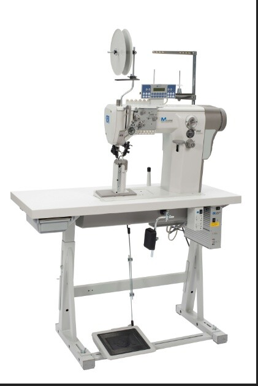
+ 888-M franch Folder- 5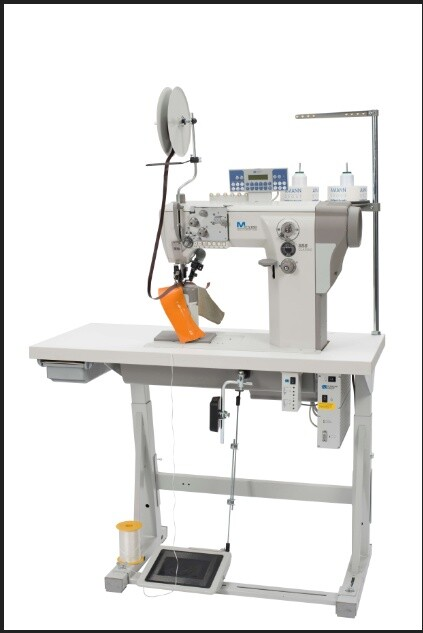
+ 888-M Franch Folder 1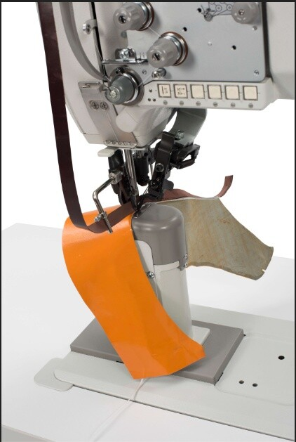
+ 888-M fraanch Folder- 3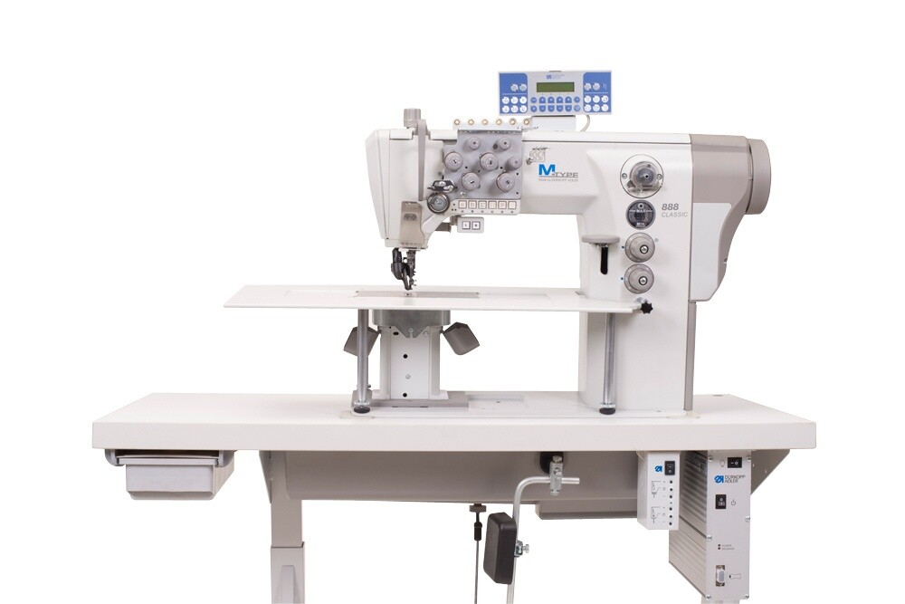
+ Additional table for post bed machines 2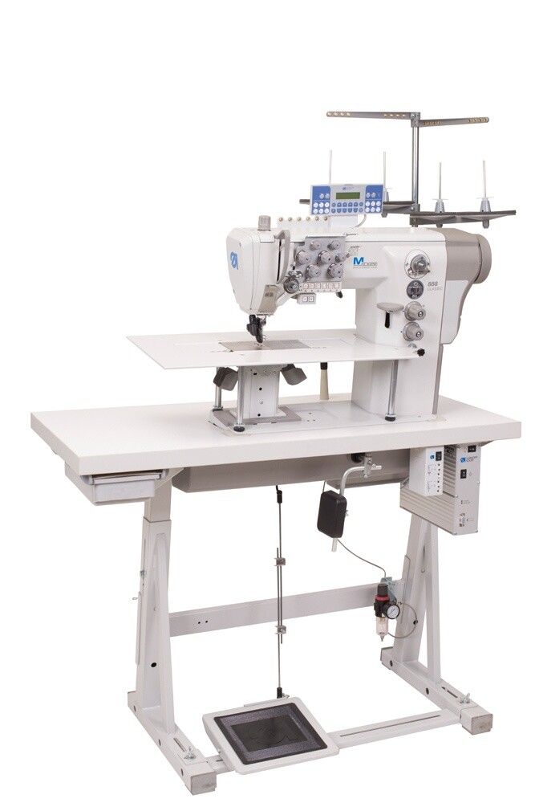
+ Additional table for post bed machines 1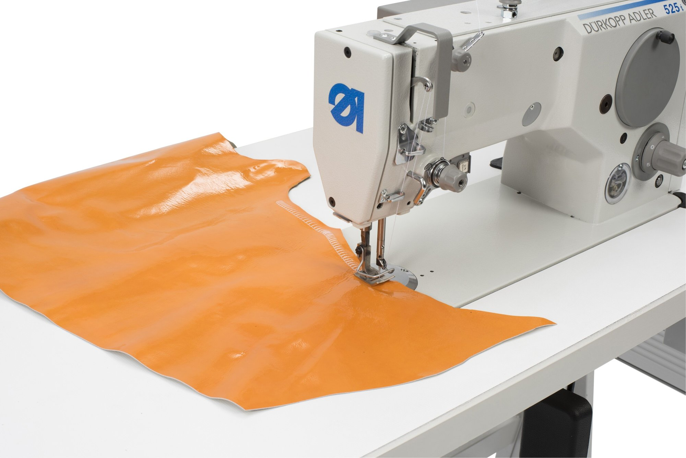
+ 525i T-steh 2-edit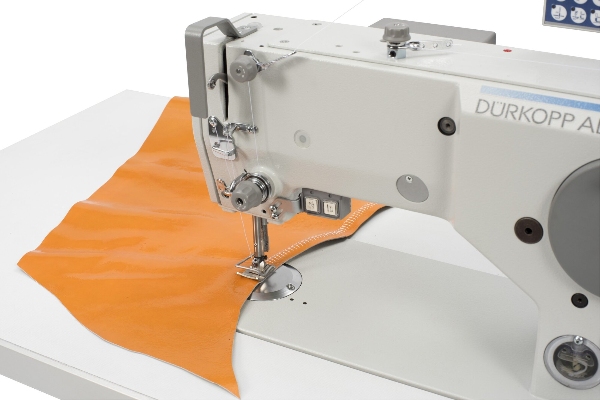
+ 525i T-steh 3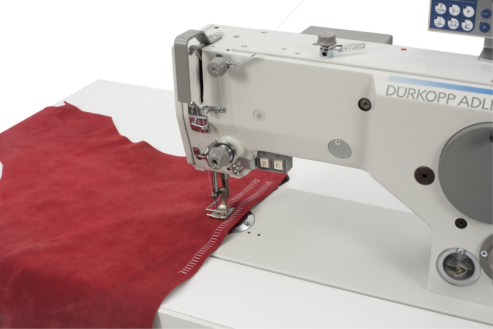
+ 525i T-steh 4 (1)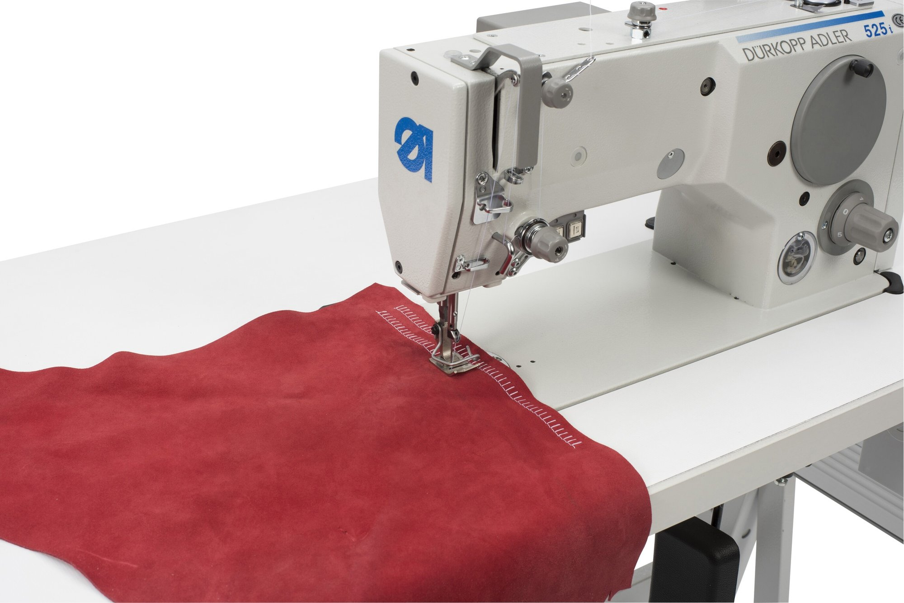
+ 525i T-steh 5-edit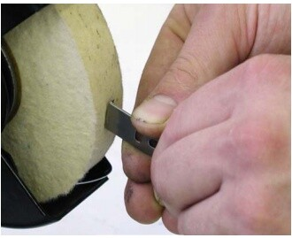
+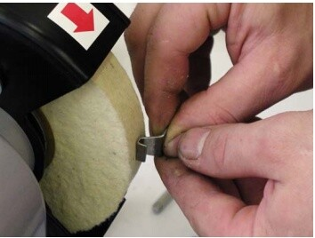
+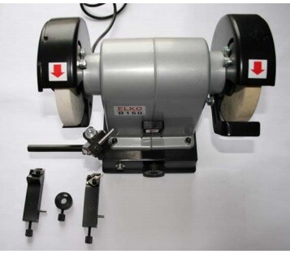
+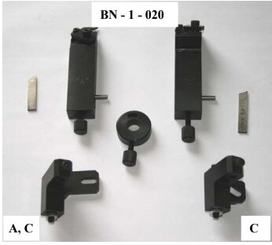
+